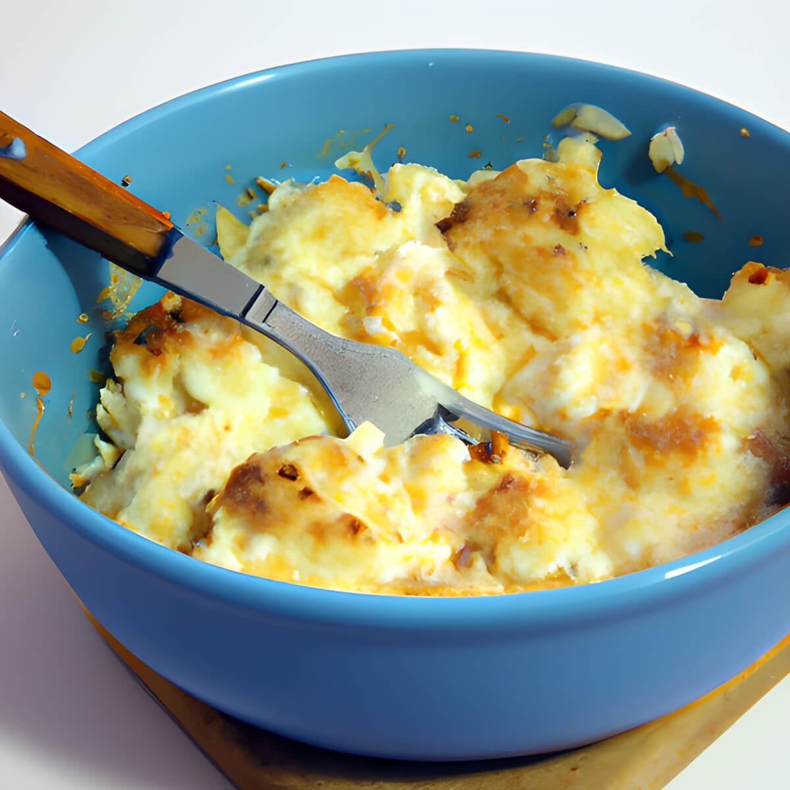

Cauliflower Cheese

Description
A delicious cauliflower cheese recipe that is perfect as a side dish with a roast dinner
Ingredients
- 1 caulflower
- 40 g butter
- 50g plain flour
- 450 milk
- 130 g mature cheddar cheese
- 1 tsp English mustard
Steps
- Preheat the oven to 200C, gas mark 6, fan 180C
- Half fill a pan with water and bring to the boil
- Remove the outer leaves from the cauliflower and chop into florets
- Add the florets to the pan and bring to the boil. Cook for 5 minutes, until the cauliflower is tender but firm
- Drain the cauliflower
- Make the sauce by melting the butter in a pan over a low heat the stirring in the flour until it forms a smooth paste
- Add the milk a little at a time, stirring until fully combined.
- Stir gently until it starts to thicken. Add the cheese and mustard and stir until it melts
- Remove sauce from heat
- Pour some of the sauce into an ovenproof dish. Add the cauliflower and pour over the rest of the sauce
- Grate 50 g cheddar on top
- Bake for 20 minutes until golden brown and bubbling